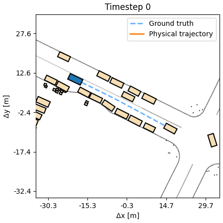
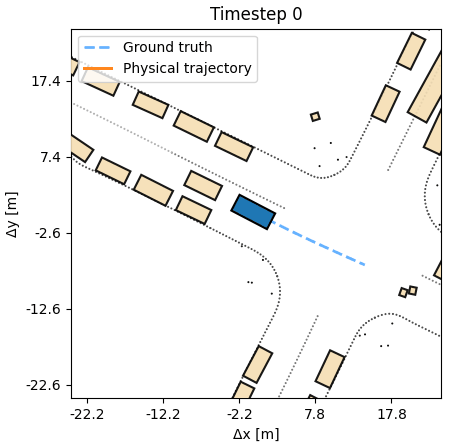
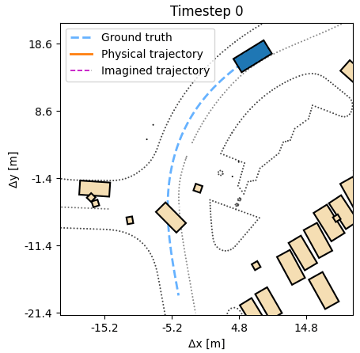
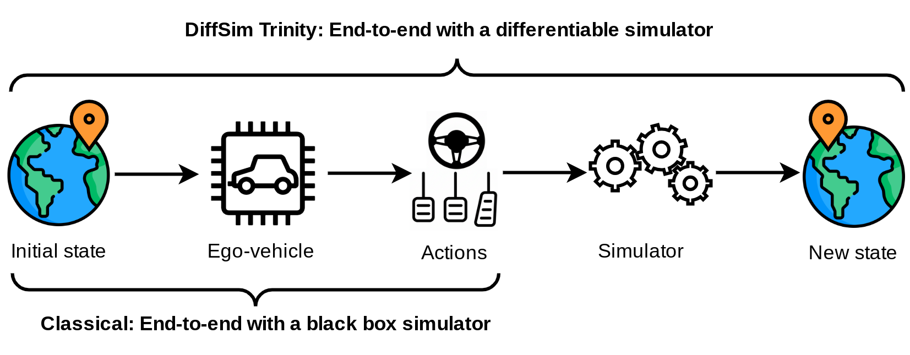

End-to-end control, planning, and search via differentiable physics
Control

Planning

Search

In many simulators, analytic and often differentiable equations move the world from one state to the next. For autonomous vehicles, these equations capture the nonlinear motion of a vehicle under certain control inputs like steering and acceleration. They often are our best attempt to model the real motion in a simple, computationally tractable way. Yet, the usage of these equations for training agents has so far been underexplored.
Differentiable simulation (DiffSim) allows us to backpropagate through the dynamics of a system, unifying data collection and parameter tuning into a single computation graph. For autonomous driving, that means the simulator is no longer just a tool to replay scenarios, but a part of the model.
Most current autonomous driving methods do not rely on differentiable simulation. As a result, their end-to-end pipeline is limited: from observational inputs to vehicle outputs and actions. DiffSim fundamentally extends the meaning of end-to-end trainability to include the simulator's dynamics. This allows the driving agent to learn how actions cause outcomes, not just which actions to take. In turn, it enables data-efficient training, direct optimization for safety and comfort, and reasoning about possible future events.
The DiffSim Trinity covers three uses: control (predict a low-level action), planning (predict a desired or counterfactual state), and search (find the best action sequence at test time in new scenes). In all settings training is done in the outcome space, not the action space, respecting the dynamics, without costly trial-and-error sampling.
Overall, differentiable simulation enables novel agentic capabilities and faster training pipelines.
